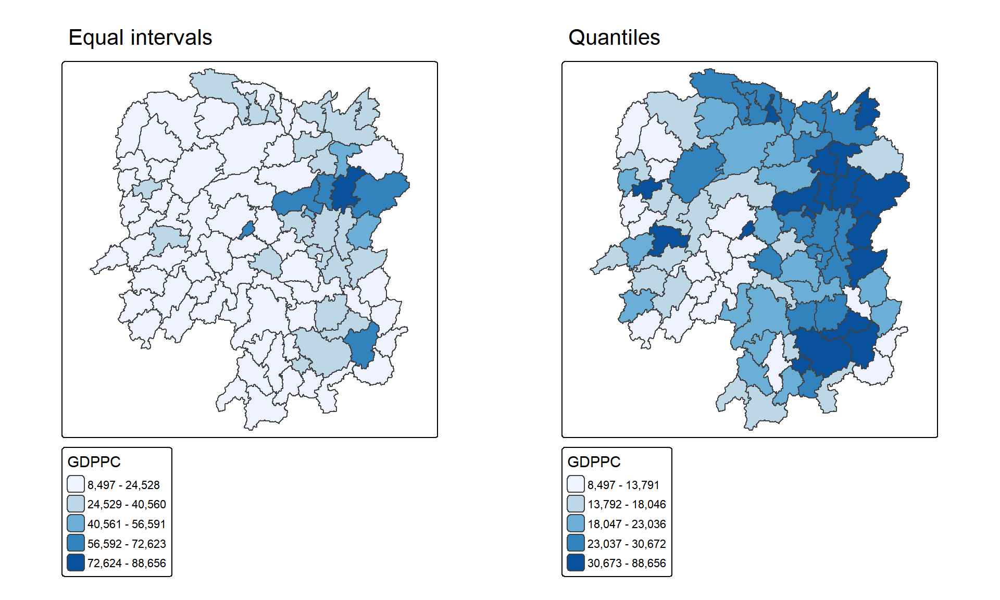
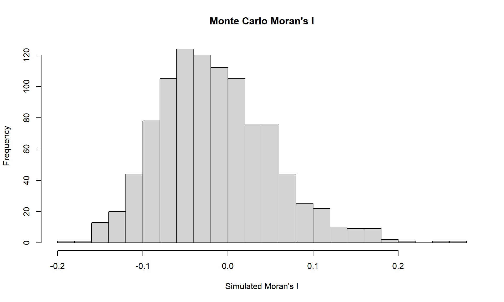
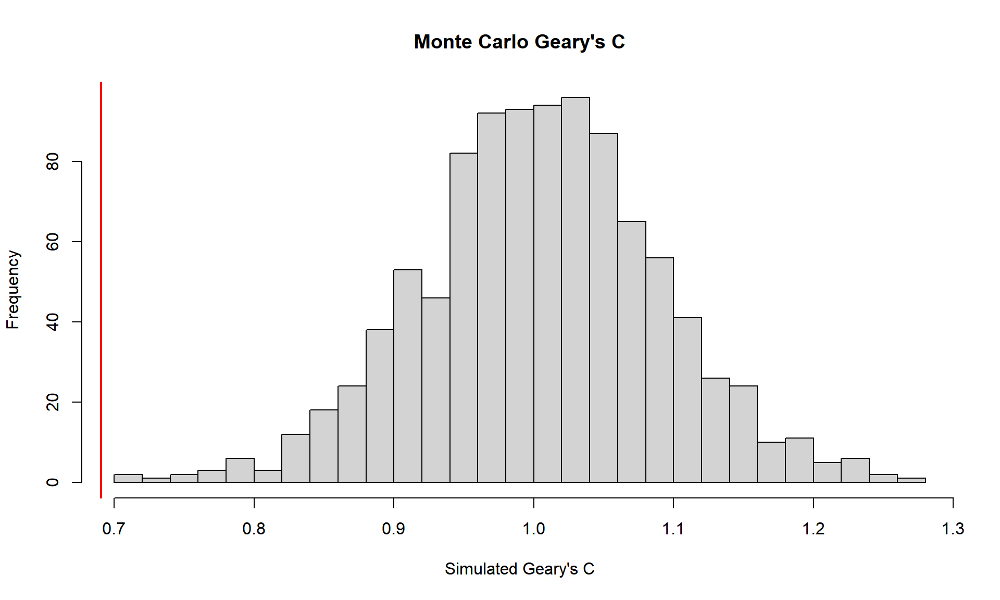
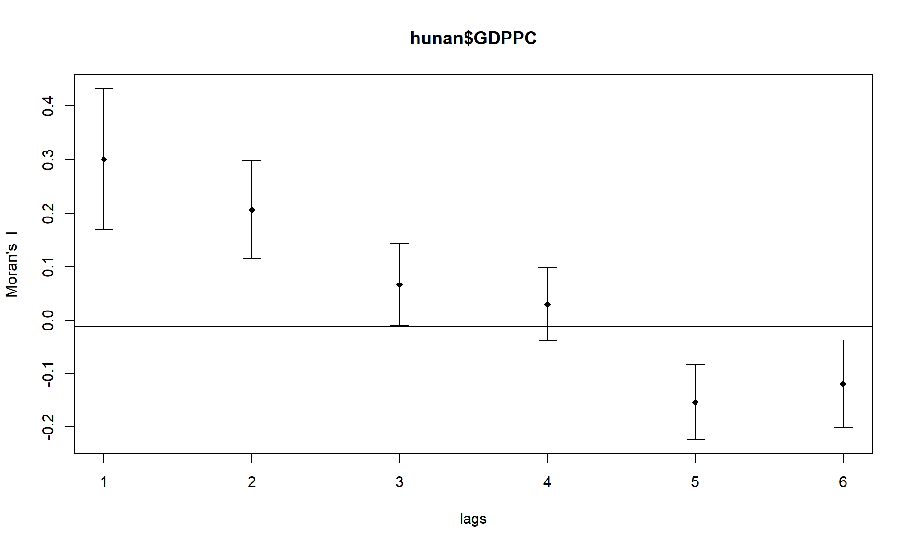
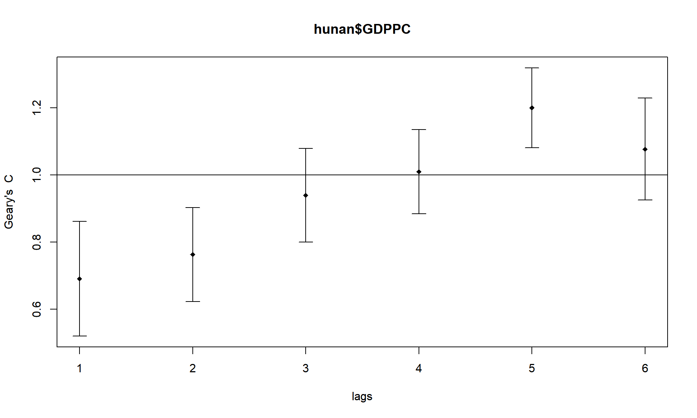

pacman::p_load(sf, spdep, tmap, tidyverse)
tmap_mode("plot")Hands-on Exercise 5A: Global Measures of Spatial Autocorrelation
1 Overview
This exercise follows Chapter 9: Global Measures of Spatial Autocorrelation. I examine whether GDP per capita (GDPPC) in Hunan’s 88 counties shows an overall spatial pattern. I use Queen contiguity and row-standardised weights, then compare analytical and permutation results for Moran’s I and Geary’s C. Finally, I examine how association changes across neighbour orders.
2 Getting Started
2.1 The analytical question and data
Do counties with similar 2012 GDPPC values tend to be near one another? I use the Hunan county shapefile and the Hunan_2012.csv development indicators. They are stored in this exercise’s data/geospatial and data/aspatial folders, so the page can render from its own folder.
2.2 Loading the packages
3 Getting the Data into R
3.1 Importing the county boundaries
hunan <- st_read(dsn = "data/geospatial", layer = "Hunan")Reading layer `Hunan' from data source
`C:\SHKnighter\ISSS608-VAA\Hands-on_Ex\Hands-on_Ex05A\data\geospatial'
using driver `ESRI Shapefile'
Simple feature collection with 88 features and 7 fields
Geometry type: POLYGON
Dimension: XY
Bounding box: xmin: 108.7831 ymin: 24.6342 xmax: 114.2544 ymax: 30.12812
Geodetic CRS: WGS 84hunanSimple feature collection with 88 features and 7 fields
Geometry type: POLYGON
Dimension: XY
Bounding box: xmin: 108.7831 ymin: 24.6342 xmax: 114.2544 ymax: 30.12812
Geodetic CRS: WGS 84
First 10 features:
NAME_2 ID_3 NAME_3 ENGTYPE_3 Shape_Leng Shape_Area County
1 Changde 21098 Anxiang County 1.869074 0.10056190 Anxiang
2 Changde 21100 Hanshou County 2.360691 0.19978745 Hanshou
3 Changde 21101 Jinshi County City 1.425620 0.05302413 Jinshi
4 Changde 21102 Li County 3.474325 0.18908121 Li
5 Changde 21103 Linli County 2.289506 0.11450357 Linli
6 Changde 21104 Shimen County 4.171918 0.37194707 Shimen
7 Changsha 21109 Liuyang County City 4.060579 0.46016789 Liuyang
8 Changsha 21110 Ningxiang County 3.323754 0.26614198 Ningxiang
9 Changsha 21111 Wangcheng County 2.292093 0.13049161 Wangcheng
10 Chenzhou 21112 Anren County 2.240739 0.13343936 Anren
geometry
1 POLYGON ((112.0625 29.75523...
2 POLYGON ((112.2288 29.11684...
3 POLYGON ((111.8927 29.6013,...
4 POLYGON ((111.3731 29.94649...
5 POLYGON ((111.6324 29.76288...
6 POLYGON ((110.8825 30.11675...
7 POLYGON ((113.9905 28.5682,...
8 POLYGON ((112.7181 28.38299...
9 POLYGON ((112.7914 28.52688...
10 POLYGON ((113.1757 26.82734...3.2 Importing the development indicators
hunan2012 <- read_csv("data/aspatial/Hunan_2012.csv")
glimpse(hunan2012)Rows: 88
Columns: 29
$ County <chr> "Anhua", "Anren", "Anxiang", "Baojing", "Chaling", "Changn~
$ City <chr> "Yiyang", "Chenzhou", "Changde", "Hunan West", "Zhuzhou", ~
$ avg_wage <dbl> 30544, 28058, 31935, 30843, 31251, 28518, 54540, 28597, 33~
$ deposite <dbl> 10967.0, 4598.9, 5517.2, 2250.0, 8241.4, 10860.0, 24332.0,~
$ FAI <dbl> 6831.7, 6386.1, 3541.0, 1005.4, 6508.4, 7920.0, 33624.0, 1~
$ Gov_Rev <dbl> 456.72, 220.57, 243.64, 192.59, 620.19, 769.86, 5350.00, 1~
$ Gov_Exp <dbl> 2703.0, 1454.7, 1779.5, 1379.1, 1947.0, 2631.6, 7885.5, 11~
$ GDP <dbl> 13225.0, 4941.2, 12482.0, 4087.9, 11585.0, 19886.0, 88009.~
$ GDPPC <dbl> 14567, 12761, 23667, 14563, 20078, 24418, 88656, 10132, 17~
$ GIO <dbl> 9276.90, 4189.20, 5108.90, 3623.50, 9157.70, 37392.00, 513~
$ Loan <dbl> 3954.90, 2555.30, 2806.90, 1253.70, 4287.40, 4242.80, 4053~
$ NIPCR <dbl> 3528.3, 3271.8, 7693.7, 4191.3, 3887.7, 9528.0, 17070.0, 3~
$ Bed <dbl> 2718, 970, 1931, 927, 1449, 3605, 3310, 582, 2170, 2179, 1~
$ Emp <dbl> 494.310, 290.820, 336.390, 195.170, 330.290, 548.610, 670.~
$ EmpR <dbl> 441.4, 255.4, 270.5, 145.6, 299.0, 415.1, 452.0, 127.6, 21~
$ EmpRT <dbl> 338.0, 99.4, 205.9, 116.4, 154.0, 273.7, 219.4, 94.4, 174.~
$ Pri_Stu <dbl> 54.175, 33.171, 19.584, 19.249, 33.906, 81.831, 59.151, 18~
$ Sec_Stu <dbl> 32.830, 17.505, 17.819, 11.831, 20.548, 44.485, 39.685, 7.~
$ Household <dbl> 290.4, 104.6, 148.1, 73.2, 148.7, 211.2, 300.3, 76.1, 139.~
$ Household_R <dbl> 234.5, 121.9, 135.4, 69.9, 139.4, 211.7, 248.4, 59.6, 110.~
$ NOIP <dbl> 101, 34, 53, 18, 106, 115, 214, 17, 55, 70, 44, 84, 74, 17~
$ Pop_R <dbl> 670.3, 243.2, 346.0, 184.1, 301.6, 448.2, 475.1, 189.6, 31~
$ RSCG <dbl> 5760.60, 2386.40, 3957.90, 768.04, 4009.50, 5220.40, 22604~
$ Pop_T <dbl> 910.8, 388.7, 528.3, 281.3, 578.4, 816.3, 998.6, 256.7, 45~
$ Agri <dbl> 4942.253, 2357.764, 4524.410, 1118.561, 3793.550, 6430.782~
$ Service <dbl> 5414.5, 3814.1, 14100.0, 541.8, 5444.0, 13074.6, 17726.6, ~
$ Disp_Inc <dbl> 12373, 16072, 16610, 13455, 20461, 20868, 183252, 12379, 1~
$ RORP <dbl> 0.7359464, 0.6256753, 0.6549309, 0.6544614, 0.5214385, 0.5~
$ ROREmp <dbl> 0.8929619, 0.8782065, 0.8041262, 0.7460163, 0.9052651, 0.7~3.3 Joining the data
I use County as the join key and retain the attributes needed below.
hunan <- left_join(hunan, hunan2012, by = "County") %>%
select(NAME_2, ID_3, NAME_3, ENGTYPE_3, County, GDPPC)
hunanSimple feature collection with 88 features and 6 fields
Geometry type: POLYGON
Dimension: XY
Bounding box: xmin: 108.7831 ymin: 24.6342 xmax: 114.2544 ymax: 30.12812
Geodetic CRS: WGS 84
First 10 features:
NAME_2 ID_3 NAME_3 ENGTYPE_3 County GDPPC
1 Changde 21098 Anxiang County Anxiang 23667
2 Changde 21100 Hanshou County Hanshou 20981
3 Changde 21101 Jinshi County City Jinshi 34592
4 Changde 21102 Li County Li 24473
5 Changde 21103 Linli County Linli 25554
6 Changde 21104 Shimen County Shimen 27137
7 Changsha 21109 Liuyang County City Liuyang 63118
8 Changsha 21110 Ningxiang County Ningxiang 62202
9 Changsha 21111 Wangcheng County Wangcheng 70666
10 Chenzhou 21112 Anren County Anren 12761
geometry
1 POLYGON ((112.0625 29.75523...
2 POLYGON ((112.2288 29.11684...
3 POLYGON ((111.8927 29.6013,...
4 POLYGON ((111.3731 29.94649...
5 POLYGON ((111.6324 29.76288...
6 POLYGON ((110.8825 30.11675...
7 POLYGON ((113.9905 28.5682,...
8 POLYGON ((112.7181 28.38299...
9 POLYGON ((112.7914 28.52688...
10 POLYGON ((113.1757 26.82734...The joined layer contains 88 counties and no missing GDPPC values.
3.4 Visualising GDPPC
Equal interval and quantile classification emphasise different parts of the same distribution. I compare both before calculating spatial statistics.
equal_map <- tm_shape(hunan) +
tm_polygons(fill = "GDPPC",
fill.scale = tm_scale_intervals(style = "equal", n = 5,
values = "brewer.blues"),
fill.legend = tm_legend(title = "GDPPC")) +
tm_borders() +
tm_title("Equal intervals")
quantile_map <- tm_shape(hunan) +
tm_polygons(fill = "GDPPC",
fill.scale = tm_scale_intervals(style = "quantile", n = 5,
values = "brewer.blues"),
fill.legend = tm_legend(title = "GDPPC")) +
tm_borders() +
tm_title("Quantiles")
tmap_arrange(equal_map, quantile_map, asp = 1, ncol = 2)
4 Global Measures of Spatial Autocorrelation
4.1 Computing Queen contiguity
Two counties are neighbours if they share an edge or a vertex. This gives a first-order neighbour list.
wm_q <- poly2nb(hunan, queen = TRUE)
summary(wm_q)Neighbour list object:
Number of regions: 88
Number of nonzero links: 448
Percentage nonzero weights: 5.785124
Average number of links: 5.090909
Link number distribution:
1 2 3 4 5 6 7 8 9 11
2 2 12 16 24 14 11 4 2 1
2 least connected regions:
30 65 with 1 link
1 most connected region:
85 with 11 linksThe 88 counties have 448 directed neighbour links, and 0 counties have no neighbours. The average county has 5.09 neighbours.
4.2 Creating row-standardised weights
Each neighbour receives weight \(1/k_i\), where \(k_i\) is the number of neighbours of county \(i\). Thus, every county contributes a row whose weights sum to one.
rswm_q <- nb2listw(wm_q, style = "W", zero.policy = TRUE)
rswm_qCharacteristics of weights list object:
Neighbour list object:
Number of regions: 88
Number of nonzero links: 448
Percentage nonzero weights: 5.785124
Average number of links: 5.090909
Weights style: W
Weights constants summary:
n nn S0 S1 S2
W 88 7744 88 37.86334 365.91475 Moran’s I
5.1 Analytical test
Moran’s I compares each county’s GDPPC with its neighbours’ GDPPC. A positive value indicates that similar values tend to occur together under this weight definition.
moran_result <- moran.test(hunan$GDPPC, listw = rswm_q,
zero.policy = TRUE, na.action = na.omit)
moran_result
Moran I test under randomisation
data: hunan$GDPPC
weights: rswm_q
Moran I statistic standard deviate = 4.7351, p-value = 1.095e-06
alternative hypothesis: greater
sample estimates:
Moran I statistic Expectation Variance
0.300749970 -0.011494253 0.004348351 The observed Moran’s I is 0.301. Its analytical one-sided p-value is 1.09e-06, giving evidence of positive global spatial autocorrelation. This is a province-wide result; it does not identify individual clusters.
5.2 Monte Carlo test
I compare the observed statistic with 999 random permutations of GDPPC, using a fixed seed to make the result reproducible.
set.seed(1234)
moran_perm <- moran.mc(hunan$GDPPC, listw = rswm_q, nsim = 999,
zero.policy = TRUE, na.action = na.omit)
moran_perm
Monte-Carlo simulation of Moran I
data: hunan$GDPPC
weights: rswm_q
number of simulations + 1: 1000
statistic = 0.30075, observed rank = 1000, p-value = 0.001
alternative hypothesis: greaterThe permutation p-value is 0.001. With 999 permutations, the smallest attainable one-sided p-value is 0.001.
5.3 Visualising the permutation distribution
moran_simulated <- moran_perm$res[-length(moran_perm$res)]
summary(moran_simulated) Min. 1st Qu. Median Mean 3rd Qu. Max.
-0.18339 -0.06168 -0.02125 -0.01505 0.02611 0.27593 hist(moran_simulated, breaks = 20, xlab = "Simulated Moran's I",
main = "Monte Carlo Moran's I")
abline(v = as.numeric(moran_perm$statistic), col = "red", lwd = 2)
6 Geary’s C
6.1 Analytical test
Geary’s C is based on differences between neighbouring counties. Values below one indicate positive spatial autocorrelation.
geary_result <- geary.test(hunan$GDPPC, listw = rswm_q,
zero.policy = TRUE)
geary_result
Geary C test under randomisation
data: hunan$GDPPC
weights: rswm_q
Geary C statistic standard deviate = 3.6108, p-value = 0.0001526
alternative hypothesis: Expectation greater than statistic
sample estimates:
Geary C statistic Expectation Variance
0.6907223 1.0000000 0.0073364 The observed Geary’s C is 0.691, below its no-autocorrelation reference value of one. The analytical one-sided p-value is 0.000153.
6.2 Monte Carlo test
set.seed(1234)
geary_perm <- geary.mc(hunan$GDPPC, listw = rswm_q, nsim = 999,
zero.policy = TRUE)
geary_perm
Monte-Carlo simulation of Geary C
data: hunan$GDPPC
weights: rswm_q
number of simulations + 1: 1000
statistic = 0.69072, observed rank = 1, p-value = 0.001
alternative hypothesis: greaterThe permutation p-value is 0.001, consistent with the analytical result.
6.3 Visualising the permutation distribution
geary_simulated <- geary_perm$res[-length(geary_perm$res)]
summary(geary_simulated) Min. 1st Qu. Median Mean 3rd Qu. Max.
0.7142 0.9502 1.0052 1.0044 1.0595 1.2722 hist(geary_simulated, breaks = 20, xlab = "Simulated Geary's C",
main = "Monte Carlo Geary's C")
abline(v = as.numeric(geary_perm$statistic), col = "red", lwd = 2)
7 Spatial Correlograms
I calculate both statistics for neighbour orders one through six. These plots show how the measured association changes as the neighbour definition reaches further from each county.
7.1 Moran’s I correlogram
MI_corr <- sp.correlogram(wm_q, hunan$GDPPC, order = 6,
method = "I", style = "W")
plot(MI_corr)
print(MI_corr)Spatial correlogram for hunan$GDPPC
method: Moran's I
estimate expectation variance standard deviate Pr(I) two sided
1 (88) 0.3007500 -0.0114943 0.0043484 4.7351 2.189e-06 ***
2 (88) 0.2060084 -0.0114943 0.0020962 4.7505 2.029e-06 ***
3 (88) 0.0668273 -0.0114943 0.0014602 2.0496 0.040400 *
4 (88) 0.0299470 -0.0114943 0.0011717 1.2107 0.226015
5 (88) -0.1530471 -0.0114943 0.0012440 -4.0134 5.984e-05 ***
6 (88) -0.1187070 -0.0114943 0.0016791 -2.6164 0.008886 **
---
Signif. codes: 0 '***' 0.001 '**' 0.01 '*' 0.05 '.' 0.1 ' ' 17.2 Geary’s C correlogram
GC_corr <- sp.correlogram(wm_q, hunan$GDPPC, order = 6,
method = "C", style = "W")
plot(GC_corr)
print(GC_corr)Spatial correlogram for hunan$GDPPC
method: Geary's C
estimate expectation variance standard deviate Pr(I) two sided
1 (88) 0.6907223 1.0000000 0.0073364 -3.6108 0.0003052 ***
2 (88) 0.7630197 1.0000000 0.0049126 -3.3811 0.0007220 ***
3 (88) 0.9397299 1.0000000 0.0049005 -0.8610 0.3892612
4 (88) 1.0098462 1.0000000 0.0039631 0.1564 0.8757128
5 (88) 1.2008204 1.0000000 0.0035568 3.3673 0.0007592 ***
6 (88) 1.0773386 1.0000000 0.0058042 1.0151 0.3100407
---
Signif. codes: 0 '***' 0.001 '**' 0.01 '*' 0.05 '.' 0.1 ' ' 1Moran’s I is positive for the first four orders and negative at orders five and six. Geary’s C is below one for the first three orders and above one from order four. Together, the correlograms show that the association is strongest nearby and does not stay constant as the neighbour order increases. Each order uses a different set of county pairs, so these values are descriptive of this particular weight structure.
8 References
- Kam, T. S. Global Measures of Spatial Autocorrelation, R for Geospatial Data Science and Analytics.
- spdep documentation: Global Moran’s I, Global Geary’s C, and spatial correlogram.